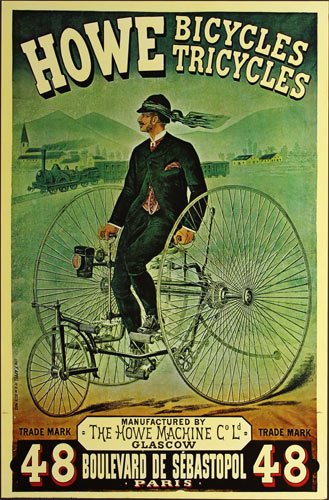

Ye Olde Cycle Shoppe
Serving Boston since 1982
Serving Boston since 1982
Mon-Sat
9am-5pm
Call Us
617-555-0123
- Why are you called "Ye Olde Cycle Shoppe?
We have a fascination with the history of cycling in this country, and the impacts this invention had on the working class at the time. We believe that access to a bicycle is the most basic way to allow for individual growth in an economy that puts motorized vehicles further away from reach.
- What types of bikes do you have?
Our shop prides itself on having a large variety of cycle types, from one-wheeled to three (no really!). We sell road bikes, mountain bikes racing bikes, cargo bikes, track and single speed bikes, kids bikes, and we've been happy to repair unicycles, wheelchairs, strollers, and cargo trikes for customers too!
- Why should I buy a bike from you?
We will work with you to find a bike that suits your riding goals. Whether that bike costs $100 or $1,000, you will receive the highest level of service and care. When you buy a bike from us, we provide free mechanical adjustments for as long as you own it. We will adjust the height, angle, and position of your new bike's seat and handlebars so that your ride is as efficient and comfortable as possible.
- Do you sell used bikes or vintage bikes?
Yes! In addition to our new inventory, the heart of our business is rescuing older bikes and giving them the love and attention they deserve to allow them to continue to work for decades to come. We have a full service repair workshop staffed by professional mechanics who are eager to help you with your repair. When you come to us for a repair, you will see that our store has an "open" workshop, where customers can watch our mechanics working and ask them questions. We don't want to keep any secrets from you and we don't want bike repair to have a mysterious aura. We're happy to show you all the tricks of the trade!